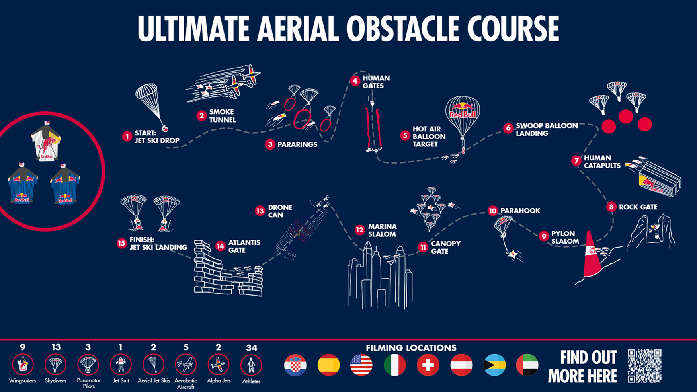
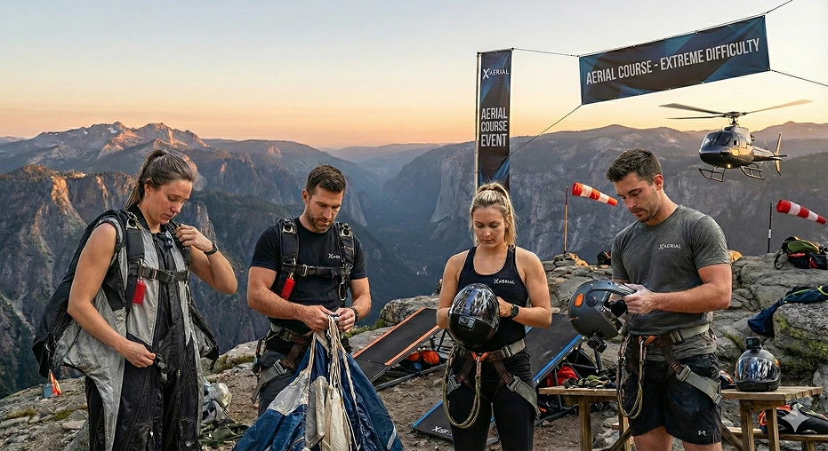
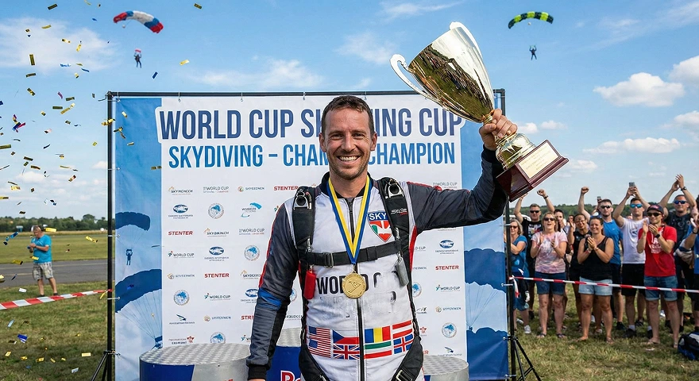
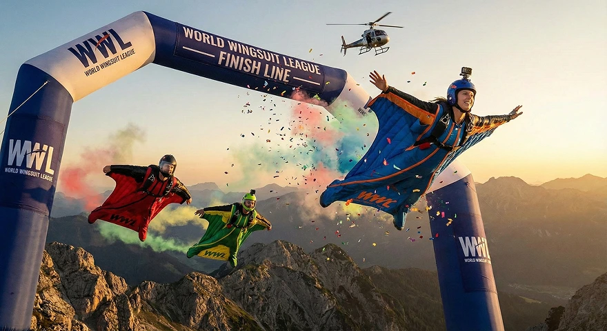

THE WORLD'S MOST INSANE AERIAL COURSE IS BACK
The Ultimate Aerial Obstacle Course is the premier multi-disciplinary championship, demanding total mastery of human flight. This event tests precision, speed, and nerve across disciplines.

The tour begins with a Jet Ski Drop and a Smoke Tunnel, followed by a dangerous passage through PARARINGS and high-speed HUMAN GATES. This start demands absolute precision to survive the initial turbulence and hit the gates at maximum velocity without any margin for error.
Half of the course focuses on precision, including SWOOP BALLON LANDING and the technical PYLON SLALOM. Here control of the parachute is key , as pilots must maintain high-speed stability through tight turns while managing altitude with extreme accuracy to hit every mark .
The athletes finish with urban obstacles such as the MARINA SLALOM, the passage through the ATLANTIC GATE, culminating in the final JET SKI LANDING. This final stretch requires total focus to navigate the tight urban gaps and execute a perfect high-speed landing on the moving target.
With the Ultimate Aerial Obstacle Course (UAOC) rapidly approaching, the X-AERIAL Elite Squad has intensified its training regimen. Pilots are focusing on tolerance maneuvers and perfecting low-level proximity flight critical skills for navigating the course's most dangerous sections, including the Human Gates and the tight Atlantic Gate finish.

Wingsuiters
Skydivers
Athletes
The annual FAI World Cup is the pinnacle of Formation Skydiving competition. Our team secured the Gold Medal in the 4-way Formation Freefall discipline in 2024, maintaining unparalleled speed and synchronization through 10 rounds of demanding routines. A testament to technical perfection.

"Javier Rodríguez, 1st place" May 2024"
The annual FAI World Cup is the pinnacle of Formation Skydiving competition. Our team secured the Gold Medal in the 4-way Formation Freefall discipline in 2024, maintaining unparalleled speed and synchronization through 10 rounds of demanding routines. A testament to technical perfection.

"Charo Escobar, 1st place" Summer 2025"